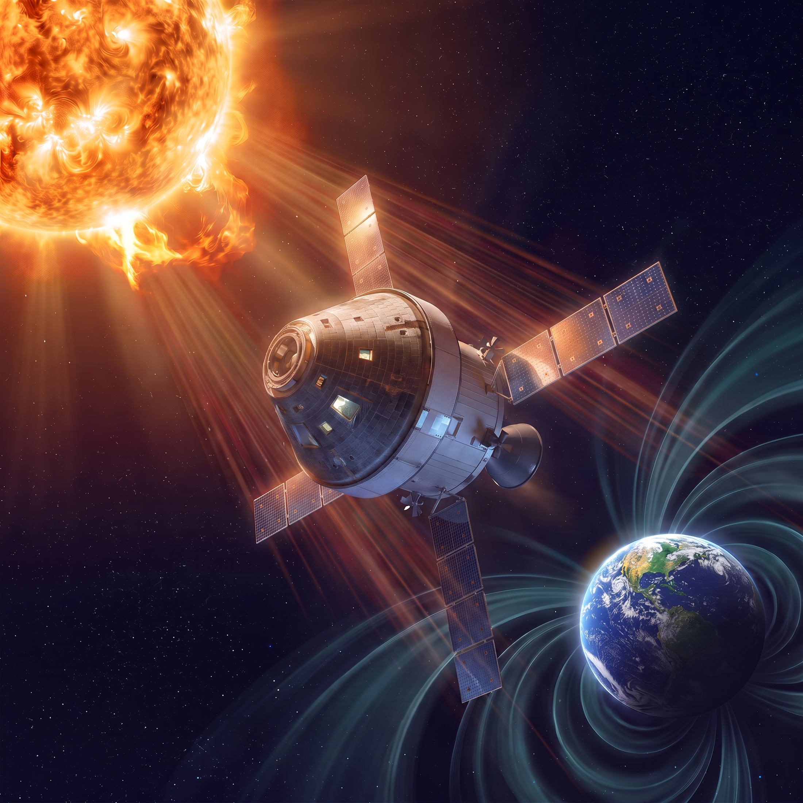

Radiation & EEE Assurance
Total ionizing dose (TID) and single-event testing to qualify commercial electrical, electronic, and electromechanical (EEE) parts for space.

Research Thrusts
CRESST qualifies the electronics that space missions depend on, joining radiation and reliability testing, failure analysis, advanced packaging, and a workforce pipeline in one center. Five research thrusts organize that work; three capability thrusts extend it beyond the core launch.
Main Thrusts
Total ionizing dose (TID) and single-event testing to qualify commercial electrical, electronic, and electromechanical (EEE) parts for space.
Cryogenic, high-voltage gallium nitride (GaN) and silicon carbide (SiC) power systems for the lunar surface and deep space.
Root-cause analysis and hardened advanced packaging with the Florida Semiconductor Engine (FSE).
Space electrical courses, credentials, and internships, from undergraduate fundamentals to professional certificates.
Assuring commercial AI processors and onboard edge compute for space, from radiation testing to qualification.
Test Capability
One center for test planning, failure analysis, and parts assurance: X-ray and laser screening on campus, protons at a local UCF partner facility, and heavy-ion campaigns at Texas A&M.
Status as of October 2026. Confirm availability with CRESST before planning a campaign.
Future Thrusts
Each is scoped and scheduled so the center can move when funding appears, to be funded from earned revenue, equipment grants, and sponsored awards. None is approved or funded today.
A dedicated proton test cell at a local UCF partner facility, outfitted for single-event-effects and total-ionizing-dose campaigns, giving CRESST and its partners local beam access on a schedulable calendar. Quote pending.
The full electronics failure-analysis chain: X-ray micro-CT, parameter analysis, microprobing, thermal and photon-emission localization, decapsulation, cross-sectioning, and bond testing, with chain-of-custody handling throughout.
A 40–400 K high-power cryostat above 5 kW, an automated extreme-temperature characterization bench, a three-phase lunar grid emulator, EMI/EMC pre-compliance, and funded student researchers.
Consortium Membership
Consortium members shape test methods, review data packages before release, and get standing access to the proton, laser, cryogenic, and failure-analysis capability as it comes online.